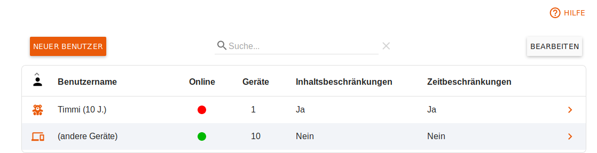
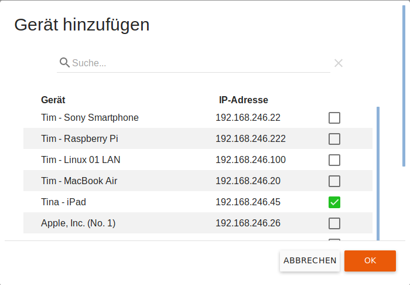
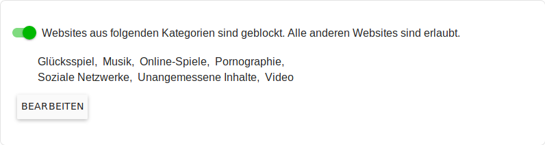
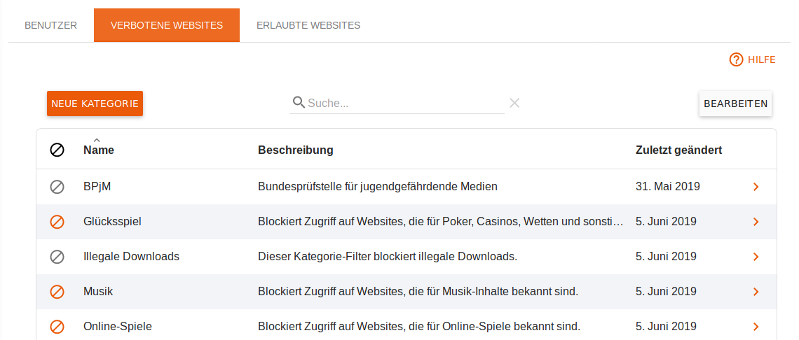

Deutsch | English
eBlocker Base ✕ / eBlocker Pro ✕ / eBlocker Family ✓
Diese Seite ist weiter unterteilt in die folgenden Abschnitte:
Hier sehen Sie die Übersicht der von Ihnen angelegten Benutzer.

Benutzer anlegen
Sie können einen neuen Benutzer anlegen, in dem Sie auf den Button Neuer Benutzer klicken.

Sie können einen Namen, eine altersgemäße Rolle und das Geburtsdatum für diesen Benutzer festlegen.
Weitere Einstellungen nehmen Sie durch bearbeiten des Nutzers vor.
Benutzer bearbeiten
Um die Einstellungen eines Nutzers zu bearbeiten, klicken Sie dessen Eintrag in der Tabelle einmal an.
Sie können nun sowohl die grundlegenden Nutzerdaten, wie Geburtsdatum, Rolle und ebenso eine bis zu 16 Stellen lange optionale PIN für diesen Benutzer festlegen. Wird ein Gerät durch den eBlocker Jugendschutz geschützt, so muss beim Wechsel des Benutzers diese PIN eingegeben werden.
Ordnen Sie alle Geräte die auch von Kindern, Jugendlichen und Gästen genutzt werden diesen zu, indem Sie durch klicken auf den Button Gerät hinzufügen ein entsprechendes Dialogfeld zur Auswahl des / der Geräte öffnen.

Mittels Bearbeiten können ein oder mehrere Geräte aus der Tabelle wieder entfernt werden. Geräte die keinem Nutzer zugewiesen wurden, unterliegen nicht dem Jugendschutz und werden unter (andere Geräte) aufgeführt. Hier ist ein globaler Schutz möglich.

Die Einstellungen des Abschnittes geblockter Website Kategorien werden je nach Alter des Kindes mit empfohlenen Werten voreingestellt. Bei Eltern und Gästen sind zunächst keine Einschränkungen aktiviert. Wählen Sie den Button Bearbeiten, um die Einstellungen zu kontrollieren und gegebenenfalls Ergänzungen oder Ausnahmen festzulegen.

Sie werden eine Auswahl an Zugriffsbeschränkungen sehen, wenn Sie auf den Button Bearbeiten klicken.
Es gibt zwei Grundsätze für die Zugriffsbeschränkungen:
Folgende Kategorien sind verboten. Alle anderen Websites sind erlaubt.
Hier können Sie die Kategorien der verbotenen Websites auswählen. Wenn Sie eigene Kategorien angelegt haben, werden diese hier ebenfalls angezeigt.
Wenn Sie den Schalter Ausnahmen aktivieren, so können Sie Kategorien der erlaubten Websites auswählen. Vordefiniert ist hier schon die Ausnahmeliste von fragFINN.
Die Ausnahmen erlauben Ihnen so zum Beispiel die Kategorie Videos zu verbieten, aber YouTube für dieses Schutz-Profil zu erlauben.
Folgende Kategorien sind erlaubt. Alle anderen Websites sind verboten.
Hier können Sie Kategorien der erlaubten Websites auswählen. Aktiviert ist schon die Ausnahmeliste von fragFINN. Alle anderen Webseiten sind dann für dieses Schutzprofil verboten.
Zeitbeschränkungen
Sind keine Zeitbeschränkungen aktiv, so können diese mit einem Mausklick auf den Schalter für die aktuellen Benutzerdetails aktiviert werden.

Sind Zeitbeschränkungen aktiv, so sehen Sie eine Übersicht über die zugelassenen Nutzungszeiten.
Mit einem Klick auf den Stift können Sie die hinterlegten Zeiten ändern, in dem Sie auf das (-) Symbol klicken entfernen Sie die entsprechende Zeile und entziehen somit die Nutzungserlaubnis für diesen Zeitraum.
Nutzungsdauer beschränken
Ist die tägliche Nutzungsdauer nicht eingeschränkt, so können diese mit einem Mausklick auf den Schalter für die aktuellen Benutzerdetails aktiviert werden.

Ist die tägliche Nutzungsdauer eingeschränkt, so sehen Sie eine Übersicht über die zugelassenen Nutzungszeiten. Diese können mit Auswahl des Buttons Bearbeiten angepasst werden.
Hier sehen Sie eine Auflistung der Kategorien von verbotenen Websites.
Unsere fest angelegten Kategorien werden von uns für Sie ständig gepflegt und jeden Werktag per Update auf den neusten Stand gehalten.

Eine neue Kategorie anlegen
Wenn Sie auf den Button Neue Kategorie klicken, dann können Sie eine eigene Kategorie verbotener Websites anlegen.
Vergeben Sie einen Namen und eine Beschreibung. Nun können Sie in der Liste eigene Domains eintragen, welche verboten sein sollen.
Wenn Sie auf den Button Speichern klicken wird Ihre Liste in die Liste der verbotenen Kategorien aufgenommen und kann dann einem Schutzprofil zugeordnet werden.
Kategorien löschen
Wenn Sie Kategorien löschen möchten, dann klicken Sie in der Übersicht der Kategorien auf den Button Bearbeiten. Wählen Sie dann die Kategorien aus welche Sie löschen möchten und klicken dann auf den Button Kategorien löschen.
Die von uns fest angelegten Kategorien können nicht gelöscht werden.
Diese Kategorien von ausdrücklich erlaubten Websites können in den Jugendschutz-Profilen verwendet werden, um den Zugriff zu den entsprechenden Websites zu erlauben.